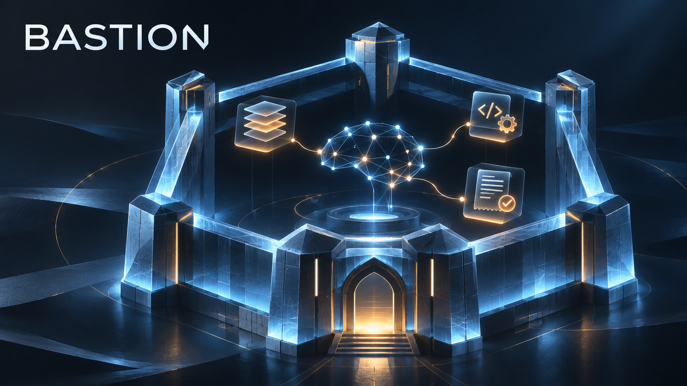
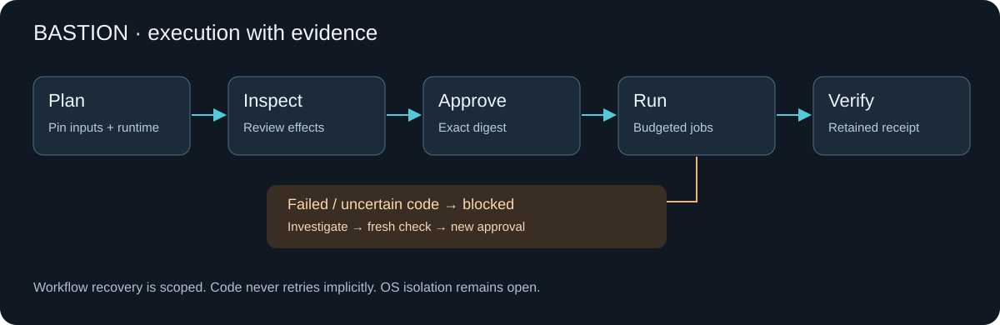
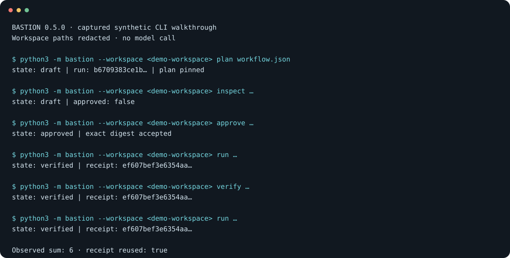

Project memory
Hash-checked knowledge, skill metadata and reviewed lessons, retained within each project.
A model-neutral harness for project knowledge, skills, approved work and retained experience. Models propose work. Bastion controls supported execution and records what happened.
Run the demoRead the current limits
The corrected RF²-backed repository QA task passed 97 tests in 30.7 seconds of measured execution. Its receipt was reused in a 307 ms CLI call. These are single local observations, not throughput claims.
python3 tools/run_repository_task.py --run --workspace dist/my-reviewed-qaReview the included source specification first. This flag approves only the bundled QA recipe.
Open the actual task reportUsage and boundariesHash-checked knowledge, skill metadata and reviewed lessons, retained within each project.
Provider-neutral handoffs and proposal formats keep project state outside the model session.
Pinned graphs and exact digests govern supported workflow execution.
Combine workflows and reviewed unittest jobs. Failed checks block downstream work.
Retained receipts, integrity checks and bounded workflow recovery preserve observed outcomes.
State budgets and quota/TTL cleanup apply to explicitly rebuildable cache.
Seven built-in capability contracts · 26 MCP tools · optional pinned native RF² decisions and checked sums. Approval, code execution and worker launch remain operator CLI actions.
Python 3.9+ on a POSIX host. Native qualification is macOS ARM64; Linux CI is pending. From the source directory, plan the bundled demo:
python3 -m bastion --workspace demo plan workflow.jsonInspect the plan. Replace RUN_ID and PLAN_DIGEST with its returned values:
python3 -m bastion --workspace demo inspect RUN_ID
python3 -m bastion --workspace demo approve RUN_ID PLAN_DIGEST
python3 -m bastion --workspace demo run RUN_ID PLAN_DIGEST
python3 -m bastion --workspace demo verify RUN_IDThe six-node demo ingests a bundled brief, recalls project knowledge, checks a sum of 6 and retains a verified receipt. It needs no provider, API key or native engine.

Actual synthetic CLI results, rendered as a terminal graphic. Workspace paths are redacted. Captured IDs belong to disposable state and cannot be reused as your own approvals.

Inspect the captured JSON · Read the mission walkthrough
# Explicitly runs and approves only the bundled disposable demo
python3 tools/docs_demo.py --runFour fresh CLI processes: plan, approve, run and verify.
Fresh CLI invocation returning a completed run's verified receipt.
A small context query with no stored knowledge match.
Captured before Task Edition. Medians of 15 local samples on macOS ARM64, Python 3.9.6. Tiny fixtures; process startup and local journal work included. No inference or native engine. These results establish neither production capacity nor a competitor advantage.
Method and ranges · Raw samplesThe native-backed qualification also blocked a deliberately regressed check, refused implicit retry and required fresh approval for correction. Hosted CI has not run.
Reviewed Python checks retain host permissions and are not OS-sandboxed. No live planner, arbitrary MVP builder, installed scheduler or other-chat dispatcher is implemented. This source candidate has not upgraded the installed plugin.
The goal is bounded, reliable overnight work. Infinite memory, AGI and arbitrary MVP-by-morning delivery are not current capabilities.
The included Markdown guides are readable in the source repository or a Markdown viewer.